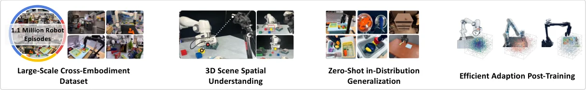
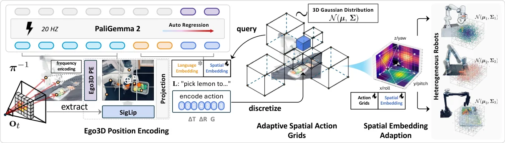
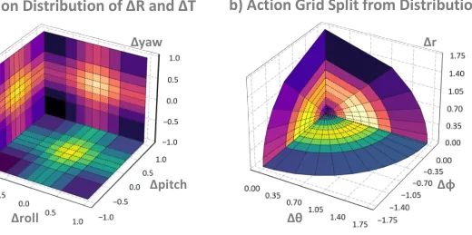
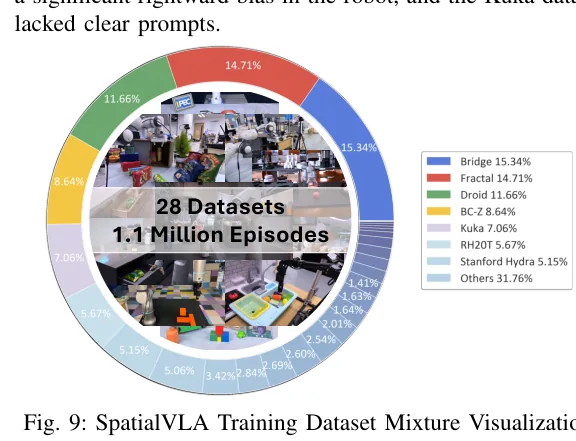

💡速记层 · 思想 / 逻辑 / 方法
默认读完就走的一层——只讲思想、逻辑、方法；效果只作验证。要核对原文/钻细节再看下面的「深读层」。
- 现有 VLA 模型仅接受 2D 观测输入，缺乏对 3D 物理世界的精确感知——而人操控物体天然依赖 3D 空间心理模型。
- 跨本体的难点有两个：观测端各机器人相机位姿不统一（无法3D对齐），动作端各机器人运动范围差异巨大（无法统一离散化）。
- Ego3D Position Encoding 用自我中心相机坐标系估计深度并反投影，规避外参标定——对任意 embodiment 普适。
- Adaptive Action Grids 对整个预训练数据拟合 Gaussian 分布，按等概率原则切分格子——让高频动作区域有更细粒度的离散格子，3 个 token 替代 7 个 token，推理快 4×。
- 预训练完成后，格子可以用新数据的 Gaussian 重新离散化（re-discretization），并用三线性插值初始化新 token embedding——快速迁移到新机器人，无需从头微调。
在 SimplerEnv 上零样本达 71.9% Visual Matching，超过 RT-2-X（60.7%）且参数量少 15×（3.5B vs 55B）；LIBERO 微调平均 78.1%，第一。空间理解专项任务（高度变化、空间指令）全面碾压无深度信息的竞争者。
想看具体数字（点开）
- SimplerEnv Google Robot 零样本 Visual Matching：71.9%，比第二名 RoboVLM 高 +15.6%。
- SimplerEnv Variant Aggregation 零样本：68.8%，超过 RT-2-X 64.3%（3.5B vs 55B 参数）。
- LIBERO-Spatial 微调：88.2%；全套 LIBERO 平均 78.1%，第一。
- 消融：去掉 Ego3D Encoding 后 variant aggregation 从 81.6% 跌到 68.9%（-12.7%）。
- 消融：Adaptive Action Grids vs 线性 256-bin → Google Robot variant aggregation +36.5%。
- 推理速度：20Hz，比 OpenVLA（5Hz）快 4×，比 RT-2-X（3.2Hz）快 6×。
- 预训练：64×A100 GPU，10 天，batch size 2048。
Track A（人形/移动操作 VLA）高度直接相关：Ego3D PE 的「无需外参标定、任意 embodiment 通用」设计思路，完全可以应用到移动操作机器人的多摄像头场景；Adaptive Action Grids 的"跨本体统一动作空间 + re-discretization 快速迁移"机制是当前少数同时解决观测和动作异构性的工作。Track B（足式先进算法）不直接相关——本文专注上肢/末端执行器的操控动作，不涉及步态或全身控制，但3D空间感知的思路对 perception module 有参考价值。
◆核心观点 · 证据
每条 = 中文论点 + 📍页/节 + 🔤逐字原文(Ctrl-F 锚点) + 🀄译文 + 💡解读。点开原文即可最短路径核对。
existing VLA models are primarily confined to 2D observation inputs and lack precise perception and comprehension of the 3D physical world — where humans instinctively construct rich, structured mental representations of space, effortlessly aligning objects within a canonical, intuitive, and even personally tailored workspace for manipulation

the observations from different robot embodiments are not 3D-aligned, because the camera sensors of different robots are various and mounted at different places (e.g. wrist and/or third-person), resulting in non-calibrated 3D observation spaces. Secondly, different robots have different action movement characteristics to accomplish diverse tasks, due to different degrees of freedom, motion controllers, workspace configurations, and task complexity, leading to significant difficulty in learning generalizable spatial actions.

The proposed Ego3D position encoding integrates depth information from the camera frame and image pixels to construct an egocentric 3D coordinate system, which eliminates the need for robot-camera extrinsic calibration and is agnostic to specific robot setups. Specifically, we use ZoeDepth to estimate depth map D and obtain pixel's 3D position p = {x, y, z} in the egocentric 3D coordinate system via back-projection π−1 with camera intrinsic parameters.
The egocentric 3D spatial representations O3d ∈Rd×h×w are obtained by adding 3D position embedding P′ and 2D path visual tokens X, depicted as follows, O3d = X + P′ = X + MLP(γ(P)).

for tokenizing continuous translation and rotation movements, we first normalize each action variable into [−1, 1] for each robot environment and statistic the translation and rotation movements ∆R = {roll, pitch, yaw}, ∆T = {ϕ, θ, r} on the whole dataset mixture, following with a parameterized Gaussian distribution fitting N(µa, Σa). Then, the continuous actions are split into M intervals Gi=1,..,M = {[a1 = −1, a2), ..., [aM-1, aM = 1]} with equal probability 1/M on each normalized action variable
it is worth noting that the model only needs to generate 3 tokens for one-step robot actions rather than 7 tokens as in RT-1, RT-2 and OpenVLA, achieving in fast model inference speed.
we fit a new Gaussian distribution N(µnew, Σnew) for each action variable on post-training datasets and create discrete spatial action grids Gnew in translation and rotation movement to construct action grids Gnew and tokens anew, where the embeddings of new spatial action tokens Eanew are initialized by trilinear interpolation with pre-trained action tokens Ea.

We train SpatialVLA from Paligemma2 backbone on a cross-robot dataset mixture with 1.1 Million real robot demonstrations {ζ1, ..., ζn}, covering a diverse range of robot embodiments, scenes, and tasks. This pre-training dataset mixture consists of a subset of OXE and the RH20T dataset and we modify the mixture weights from OpenVLA according to the real-word testing performance of individual dataset
Our SpatialVLA model yields 71.9% and 75.1% Visual Matching scores in zero-shot and fine-tuning settings, surpassing the second-best policy, RoboVLM, by +15.6% and +11.7% margins. Notably, our model trained from scratch on OXE mixture with RH20T surpasses the state-of-the-art closed-source model RT-2-X, achieving superior performance in Visual Matching (71.9% vs 60.7%) and Variant Aggregation (68.8% vs 64.3%), while using significantly fewer model parameters (3.5B vs 55B).
In contrast to the conventional linear 256-bin action space discretization (#1v.s.#2), the proposed adaptive spatial action grids exhibits significant advantages, particularly in the Google Robot task, with the promotion of +36.5% and +42.1% in variant aggregation and visual matching success rates, respectively.
the proposed egocentric 3D position encoding (ego3d), incorporating 3D point cloud features, helps the model overcome varied lighting, color, textures, and camera poses, yielding stronger generalizability in diverse manipulation scenarios. Models w/o ego3d suffer a significant performance drop in variant aggregation, from 81.6% and 79.2% to 68.9% and 66.7%, due to their inability to adapt to scene changes.
⎘开源状态 · 实时核查
以下为 2026-06 实时查询 GitHub SpatialVLA/SpatialVLA 和 Hugging Face IPEC-COMMUNITY 的结果。
- 代码
- 已开源 github.com/SpatialVLA/SpatialVLA（MIT License；Python 96.5%，Shell 3.5%；689★，51 forks）
- 权重
- 已开源 IPEC-COMMUNITY/spatialvla-4b-224-pt（预训练）· spatialvla-4b-mix-224-pt（混合微调）·
spatialvla-4b-224-sft-bridge·spatialvla-4b-224-sft-fractal - 数据
- 部分开源 OXE 和 RH20T 本身已公开；数据混合权重配方在论文 Appendix A 中披露，但需自行下载和处理
- 依赖
- 简洁 纯 HuggingFace Transformers（≥ 4.47.0）推理，8.5GB GPU，Python 3.10+；
AutoModel+AutoProcessor即可加载
论文 Abstract 明确声明 "All the details and codes are open-sourced"，代码库仅依赖标准 HuggingFace 接口，复现门槛极低。与 π0（JAX + 私有硬件）相比，SpatialVLA 的开源程度和易用性明显更高。
All the details and codes are open-sourced.
⚖批判 · 评级
SpatialVLA 是迄今少数同时解决 VLA 的"观测端3D对齐"和"动作端3D统一"两个跨本体核心难题的工作，且都以极简的方式实现（加法 PE、Gaussian 格子离散化），无需额外的 RGB-D 硬件或相机标定。3 tokens/step 的推理设计使其在 20Hz 运行（实用性强）；代码权重全开源（MIT）；消融实验充分，Adaptive Action Grids vs 线性256-bin 的 +36.5% 差距是关键说服力数据。RSS 2025 接收，是当前 VLA 社区的重要参考基线。
① 单目深度估计的误差：ZoeDepth 的深度估计在弱纹理/反光物体上误差较大，论文未分析 Ego3D PE 对深度估计精度的敏感性。② Gaussian 假设的局限（作者自承）：单轴运动场景下 Gaussian 拟合会导致格子在某轴聚集，丧失其它轴的细粒度。③ 长时序任务困难（作者自承）：LIBERO-Long 成功率 55.5%，明显低于其它子任务，因为模型仅依赖当前帧和历史 token，无显式长程规划机制。④ 评测场景局限：评测全为桌面单臂操控，无移动底盘、双臂或腿足场景，泛化到移动操作 VLA 需验证。⑤ 无与 diffusion-based VLA 的直接对比：π0 的流匹配动作 head 在精细操控上通常更优，但论文仅部分对比 π0（且 π0 无开源权重对齐比较）。
评级：Important 方法创新扎实、开源完整、消融充分，但非颠覆性范式突破——是 VLA 空间表示方向的优质参考论文，尤其对 Track A 移动操作 VLA 有直接工程参考价值。